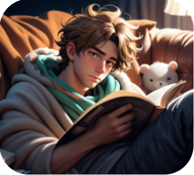
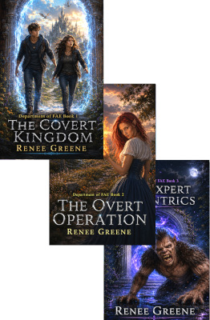
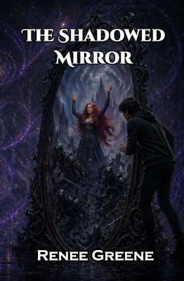
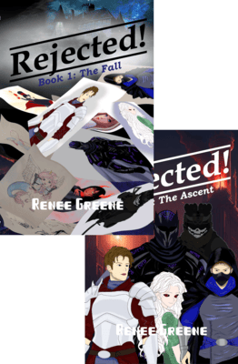
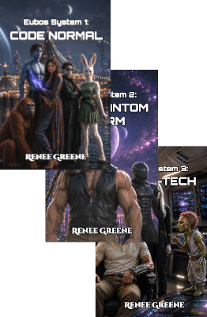

Bryan is in the spectrum in our world. In the world beyond the portal, he's a mage, still awkwward, and still very Bryan, but able to think clearly and speak the language of magic. He and his sister have to go through the portal to save their father, and only Bryan with his unique abilities can save his father and both worlds.

This is a fun, but at times intense, story of a magic mirror and people between the fantasy world behind it and our world switching places. The oracle is based off someone in the spectrum who we love dearly, and it made a great character people in the spectrum can relate to. The story is fun for anyone, but it's nice for people in the spectrum to have very relatable characters.

Everyone in our family came up with characters for this story and our autistic son played a character. See if you can figure out which one. This is a truly unique story about rejected characters that go to the land of rejected that is an eclectic cross of many genres and characters and has great interplay between the characters and lots of action.

Eubos was role-played by family members, who each made up their own characters. Thus, there are definitely amazing characters with autistic traits in it, which you will recognize if you know the spectrum. This is a great Sci-Fi with wonderful character, and definitely at times, geeks amok.